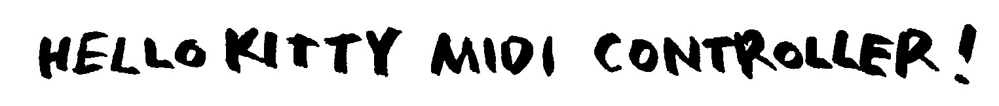
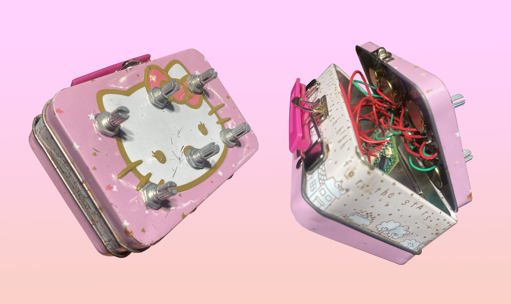
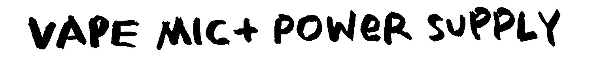
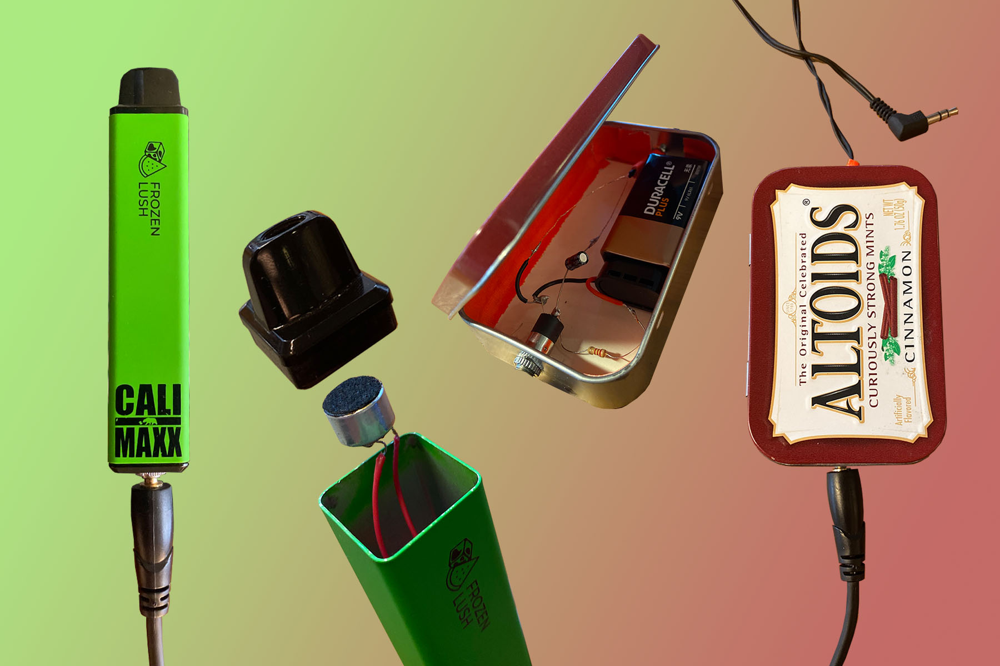
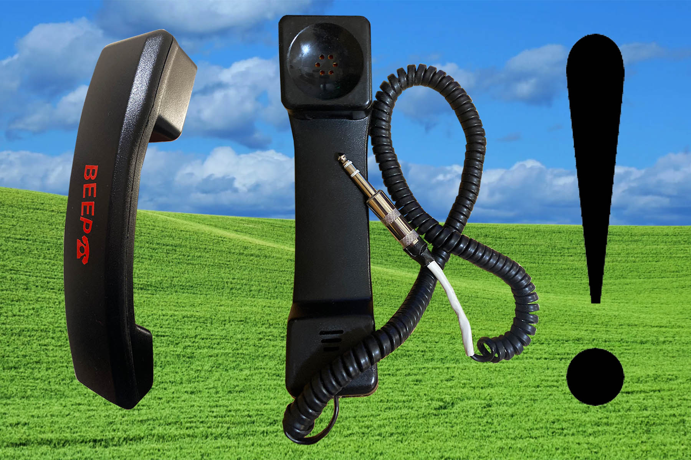

at wesleyan, i am lucky to be surrounded by and immersed in a rich history of experimental electronic music composition, research, and development. in the past year i have pivoted a large amount of my focus and work within the music major towards taking advantage of this unique environment. among some newfound passions, one is for the garbage – namely the electronic garbage. below are three projects, each of which is largely or wholly made from salvaged and used electronic 'garbage'...


NOVEMBER 2021
above is the first version of what will hopefully be an ongoing series of hello kitty midi controllers, each with different ranges of midi capabilities depending on the size of the box.
this controller runs on the teensy lc and connects to any daw with a standard micro-usb cable.


JANUARY 2022
existing in a generation of kids addicted to vaporized nicotine is what prompted the idea for the vape mic, which aims to reduce waste from single use vapes by repurposing them as housing for microphones.
this model uses a microphone element salvaged from a discarded childrens toy, an altoids tin to house the power supply, and an aux cable from a pair of free air canada earbuds i acquired on a recent trip to nova scotia.

OCTOBER 2021
around august, my school decided to do a complete overhaul of the telephone systems in faculty offices and threw more than 100 office phones into the electronics recycling area. upon my weekly visit to this area i snagged as many as i could carry and brought them back to my dorm...
the beep phone employs the concept that any speaker can be reverse wired to function as a microphone, and vice versa. after some experimentation i figured out which wires connected to the speaker (top) which boasts the beautiful, crunchy 'telephone filtering' sound, rewired it to function as a microphone, and soldered it to a 1/4" plug to make it accessible for amps and interfaces with no plug in power needed.
here's an example of the mic quality:

gibson bernath - website design information - last updated: september 2022